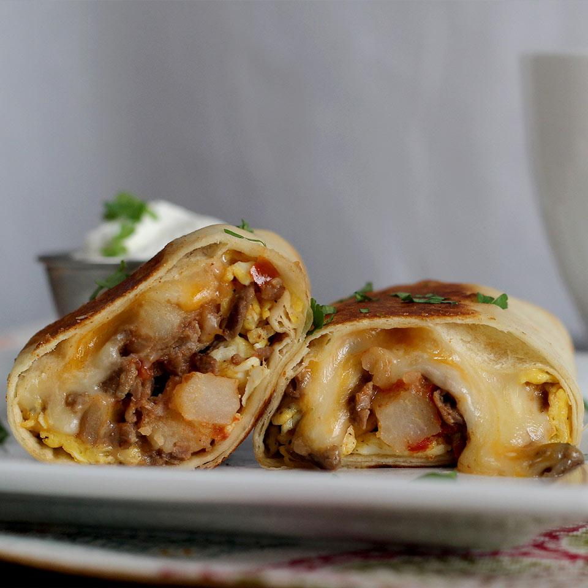

Carne Asada Breakfast Burrito

Description
A classic carne asada burrito made ready for breakfast. A classic with the addition
of scrambled eggs is a great start to the day.
Ingredients
- 2 pounds beef skirt steak, cut in thin strips
- 2 tbls carne asada seasoning
- 1 tbl garlic powder
- 1 tbl vegetable or other neutral oil
- 1/2 sweet onion, diced
- 1 red bell pepper, seeded and chopped
- 1 jalapeno pepper, seeded and diced
- 1 can fire-roasted tomatoes
- 2 cups frozen, shredded potatoes
- 4 tbls butter, divided
- 6 eggs, whisked
- 2 cups shredded cheese
- 4 flour tortillas
Steps
- Mix beef with seasoning and garlic powder. Toss to evenly coat, marinade for 5 minutes
- Heat oil in large skillet over med-high. Cook steak until browned. Stir in peppers and onions.
Add tomatoes and potatoes and cook until tender. Season w/ salt and pepper. Remove to mixing bowl.
- Melt 1 tbl of butter in skillet and add eggs. Cook, stirring continuously until scrambled. Add steak
to skillet and cook with eggs for 2 minutes. Melt remaining butter in microwave.
- Add cheese to tortillas and add eggs, steak, and potato mixture. Make burrito and optionally, add to skillet to brown
Homepage